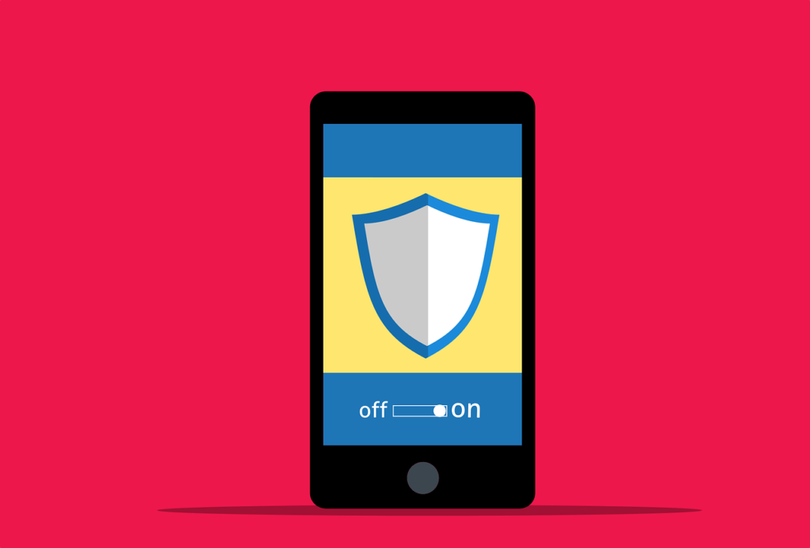
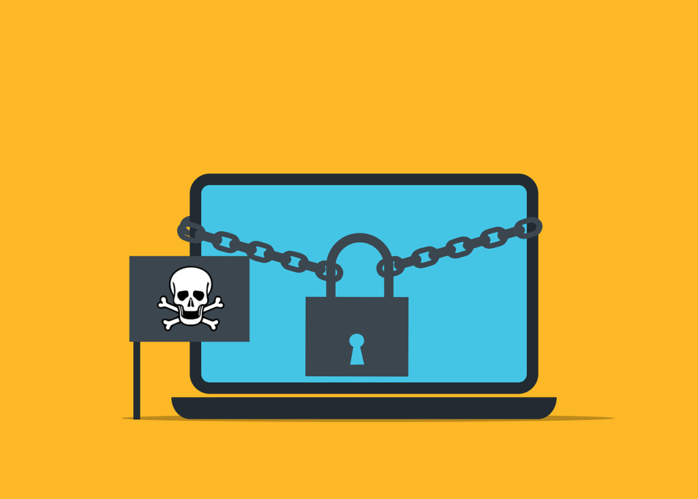
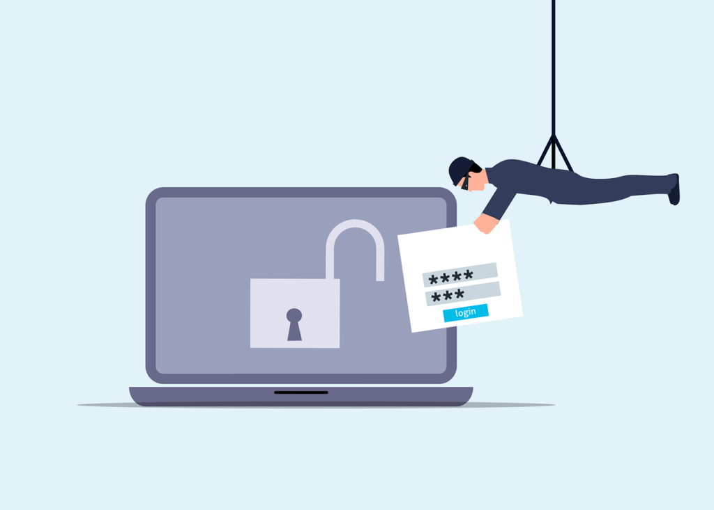
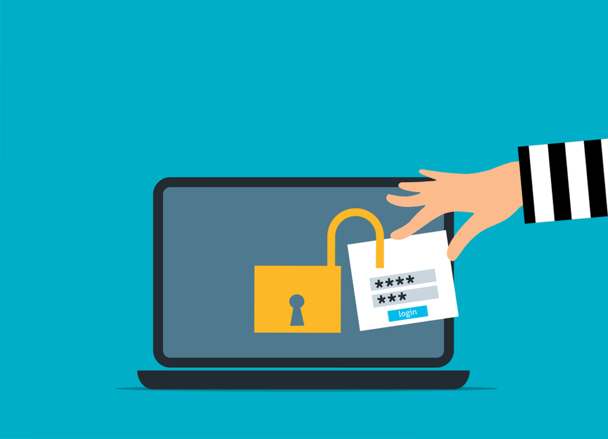
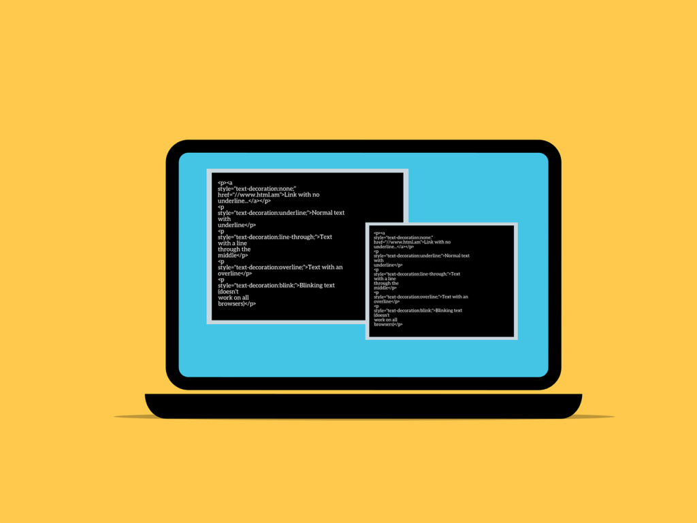

Technology advice without the noise.
Plain-language IT guidance for Tasmanian businesses, community organisations, and individuals.
Practical technology advice for Tasmanian teams.
Security, device, scam, and productivity guidance.
8 Considerations Before Buying Used Technology
We use our devices every day, so they need to work well for our needs. A device that’s slow or broken is inconvenient and can affect productivity for day-to-day...
 Cybersecurity
Cybersecurity
All About the New U.S. Cyber Trust Mark
The Cyber Trust Mark is a new smart device label created by the US government to prove that a device is safe. Internet of Things (IOT) devices have risen in...

CybersecurityTop 10 Security Tips for Mobile App Users
Mobile applications have become an integral part of our lives. We use them to browse the internet, network, communicate, and much more. But they open us up to risks...
 New Technology
New Technology
Is It Time for a Device Upgrade? Check for These 7 Signs
Technology is fast, and in no time, our gadgets get outdated. According to data from Statista, consumers replace their devices about every 2-3 years. Still, it can...
 Productivity
Productivity
How Much Device Storage You Need: A Comprehensive Guide
Device storage decides how many applications, photos, and files you can retain on your device. When you run out of storage, it can affect your productivity and...
CybersecuritySpotting the Difference Between Malware and Ransomware
Malware and ransomware are two types of bad software. They can damage your computer or steal your data. Downloading this harmful software comes with serious...
 New Technology
New Technology
7 Ways Using AI for Work Can Get Complicated
AI is going to change how we work. It can make some tasks easier. But it can also cause problems. Let’s look at some ways AI can make work tricky. What is AI and...
Productivity8 Ways to Organize Your Devices for Productivity
Our devices are a big part of our daily lives: work, fun, and staying in touch. Still, sometimes they make us less productive. In this article, you will learn how...

CybersecurityHow to Minimize Ransomware Damage
Ransomware has now become a big problem for many people and businesses. It can lock up your files and make you pay money to get them back. This article will show...

Cybersecurity10 Steps to Prevent a Data Breach
Data breaches can harm your business. They can cost you money and trust. Let’s look at how to stop them from happening. What is a data breach? A data breach is when...
 Cybersecurity
Cybersecurity
How to Spot Hidden Malware on Your Devices
Malware is bad software that can hurt your computer or phone. It can also make your device run slow and steal your info. Here is how you can spot hidden malware on...
IT ManagementGuide to Secure File Storage and Transfers
File storage and transferring hold a very dear place in most people’s lives. However, the safety of files is really tough to maintain. In this guide, we are going...
 Business Continuity
Business Continuity
Best Practices for Secure Data Backup
These days, everything is digital. We deal with data every day: from personal photos to work files that hold a lot of value. What happens if you lose that? Well,...
Cybersecurity5 Common Cyber Threats in 2025 (and How To Avoid Them)
In 2025, cyber threats are in almost every nook and corner. They might be with the intent to destroy computers, steal data, or take money. Understanding what they...
 Cybersecurity
Cybersecurity
Can Password Managers Be Hacked?
Password managers keep our online accounts safe. They store all our passwords in one place. But are they hackable? What Are Password Managers? Password managers are...
 Productivity
Productivity
10 AI Tools You Need in Your Office For Productivity
In today’s fast-moving world, everyone wants to work wiser, not harder. The involvement of AI tools will definitely help you do just that. They can make your work...
New TechnologyWhat is Blockchain Technology and How Does it Work?
Blockchain technology is changing the world. It is a system designed to keep records safe and secure. But how does it work? Let’s find out more about this amazing...
 Cybersecurity
Cybersecurity
Ultimate Guide to Encryption Methods
Encryption is a method of securing information. It converts readable data into secret code. Only the right key can decode it. This guide will help you understand...
ProductivityGuide to Smart Windows 11 Settings to Boost Your Productivity
The newest Windows OS is fast gaining ground on Windows 10. As of August 2024, Windows 11 had over 31% of the Windows market share. That is bound to increase fast...
 New Technology
New Technology
5 New Trends from a Study on the State of AI at Work
The pace of technological advancement is accelerating. This is not news to anyone wading through the ChatGPT craze. Artificial intelligence (AI) is at the forefront...
CybersecurityInnovative Solutions to IoT Device Security
The Internet of Things is growing day by day. More devices are connecting to the internet. And with that growth comes new security risks. Let’s look at some new...

CybersecurityHow Password Managers Protect Your Accounts
Passwords unlock our digital lives. We use them for email, bank accounts, and more. Remembering all these passwords is hard. Password managers help us keep our...
 Cybersecurity
Cybersecurity
What is Threat Exposure Management (TEM)?
Threat Exposure Management (TEM) is an important cybersecurity tool. It helps organizations find and fix weak spots in their digital systems. TEM outsmarts hackers...
 Home Technology
Home Technology
10 Tips For a Seamless Smart Home Experience
Smart homes make life easier. But setting one up can be tricky. Here’s how to make a smooth smart home system. What is a Smart Home? A smart home uses technology to...

CybersecurityHow is Your Cyber Hygiene? Essential Tips For 2025
Cyber hygiene is super important. It’s like brushing your teeth but for your online life. Good cyber habits help keep you safe from hackers on the internet. Let’s...
 Cybersecurity
Cybersecurity
Protect Yourself: 8 Steps to Take When You Get a Notice Your Data Was Breached
When it happens, you feel powerless. You get an email or letter from a business saying someone breached your data. It happens all too often today. Data breaches...
Have a technology question?
Send us the context and we will give you practical next steps.